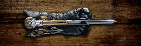
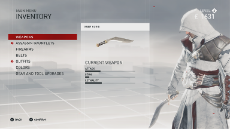

Personaje
Ambele personaje principale au abilități diferite, iar stilurile de joc ale gemenilor Frye reflectă diferitele lor personalități. Cu câteva excepții puteți comuta după bunul plac între personaje între misiuni. Asasinii adună o varietate de echipamente la dispoziția lor, dar încep jocul cu o lamă ascunsă pe mănușa lor de asasin, bombe de fum și cuțite de aruncat. Cuțitele de aruncare au noua caracteristică de a activa capcane, cum ar fi butoaie agățate. Pe măsură ce povestea progresează, lansatorul de frânghie și lansatorul de săgeți se adaugă la mănușile Assassin.

Săgețile halucinogene pot fi aruncate din mănușă către indivizi sau pot fi aruncate în focuri pentru a afecta o zonă mai largă. Dispozitivul de lansare a frânghiei poate fi folosit pentru a urca rapid clădiri, iar pe acoperișuri poate fi folosit pentru a crea tiroliene temporare.

Sunt disponibile arme de mână, inclusiv pivoturi, revolvere și pistoale semiautomate. Sabia de trestie și kukri sunt arme corp la corp disponibile, dar fiecare gemeni poate echipa o singură armă la un moment dat. Datorită reglementărilor mai stricte din epocă privind transportul armelor, personajele își ascund armele atunci când nu sunt folosite. În calitate de geamăn nesăbuit și luptător, Jacob începe jocul cu o pereche de articulații din alamă. Evie, fiind echilibrată și mai puțin exuberantă decât fratele ei, se concentrează mai mult pe stealth. Ea începe jocul cu o sabie de trestie. Ambii gemeni pot folosi orice arme și mănuși deblocate, dar au propriile lor articole de îmbrăcăminte; Mantiile lui Evie și centurile lui Jacob oferă ambele bonusuri pentru apărare și stealth, dar mantile oferă un bonus mai mare pentru stealth, în timp ce centurile oferă o apărare mai puternică. Aceste articole sunt purtate pe lângă ținutele lor.